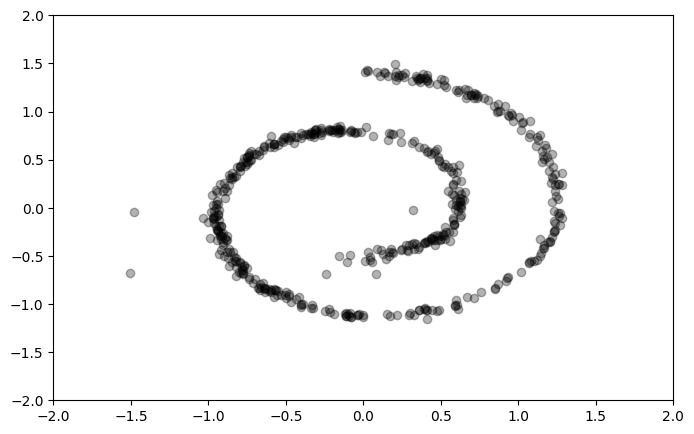

import torch
from torch import nn
import numpy as np
class PositionalEncoding(nn.Module):
"""The classic positional encoding from the original Attention papers"""
def __init__(
self,
d_model: int = 128,
maxlen: int = 1024,
min_freq: float = 1e-4,
device: str = "cpu",
dtype=torch.float32,
):
"""
Args:
d_model (int, optional): embedding dimension of each token. Defaults to 128.
maxlen (int, optional): maximum sequence length. Defaults to 1024.
min_freq (float, optional): use the magic 1/10,000 value! Defaults to 1e-4.
device (str, optional): accelerator or nah. Defaults to "cpu".
dtype (_type_, optional): torch dtype. Defaults to torch.float32.
"""
super().__init__()
pos_enc = self._get_pos_enc(d_model=d_model, maxlen=maxlen, min_freq=min_freq)
self.register_buffer(
"pos_enc", torch.tensor(pos_enc, dtype=dtype, device=device)
)
def _get_pos_enc(self, d_model: int, maxlen: int, min_freq: float):
position = np.arange(maxlen)
freqs = min_freq ** (2 * (np.arange(d_model) // 2) / d_model)
pos_enc = position[:, None] * freqs[None]
pos_enc[:, ::2] = np.cos(pos_enc[:, ::2])
pos_enc[:, 1::2] = np.sin(pos_enc[:, 1::2])
return pos_enc
def forward(self, x):
return self.pos_enc[x]
class GaussianFourierProjection(nn.Module):
"""Positional encoding for continuum states. Think how to embed
functional dependence on a real-valued scalar, like f(x) -> f(x, t)
for some scalar time variable t.
This creates random Gaussian Fourier features. In fact, Random fourier
Features have an interesting $N \to \infty$ limit for layer width $N$;
They become Gaussian Processes!
"""
def __init__(self, embed_dim: int, scale: float = 1.0):
super().__init__()
self.embed_dim = embed_dim
self.scale = scale
self.W = torch.randn(self.embed_dim // 2) * self.scale
def forward(self, x):
x_proj = x[:, None] * self.W[None, :] * 2 * 3.1415927
return torch.cat([torch.sin(x_proj), torch.cos(x_proj)], dim=-1)
class DiscreteTimeResidualBlock(nn.Module):
"""Generic block to learn a nonlinear function f(x, t), where
t is discrete and x is continuous."""
def __init__(self, d_model: int, maxlen: int = 512):
super().__init__()
self.d_model = d_model
self.emb = PositionalEncoding(d_model=d_model, maxlen=maxlen)
self.lin1 = nn.Linear(d_model, d_model)
self.lin2 = nn.Linear(d_model, d_model)
self.norm = nn.LayerNorm(d_model)
self.act = nn.GELU()
def forward(self, x, t):
return self.norm(x + self.lin2(self.act(self.lin1(x + self.emb(t)))))
class BasicDiscreteTimeModel(nn.Module):
def __init__(self, d_model: int = 128, n_layers: int = 2):
super().__init__()
self.d_model = d_model
self.n_layers = n_layers
self.lin_in = nn.Linear(2, d_model)
self.lin_out = nn.Linear(d_model, 2)
self.blocks = nn.ParameterList(
[DiscreteTimeResidualBlock(d_model=d_model) for _ in range(n_layers)]
)
def forward(self, x, t):
x = self.lin_in(x)
for block in self.blocks:
x = block(x, t)
return self.lin_out(x)import os
os.environ["KMP_DUPLICATE_LIB_OK"] = "True"
from typing import Any, List
from pathlib import Path
import numpy as np
import torch
from torch import nn
from sklearn.datasets import make_swiss_roll
import matplotlib.pyplot as plt
from matplotlib import animation
from fire import Fire
from tqdm import tqdm
from pydantic import BaseModel
from diffusers import DDPM
from models import BasicDiscreteTimeModel
from IPython.display import Image
class TrainResult(BaseModel):
losses: List[int]
samples: List[Any]
def train(
model: nn.Module,
ddpm: DDPM,
batch_size: int = 128,
n_epochs: int = 400,
sample_size: int = 512,
steps_between_sampling: int = 20,
seed: int = 42,
) -> TrainResult:
np.random.seed(seed)
torch.manual_seed(seed)
assert batch_size > 0 and steps_between_sampling > 0 and sample_size > 0
N = 1 << 10
X = make_swiss_roll(n_samples=N, noise=1e-1)[0][:, [0, 2]] / 10.0
optim = torch.optim.Adam(model.parameters(), 1e-3)
losses: List[float] = []
samples: List[Any] = []
step = 0
avg_loss = None # exponential moving average
with tqdm(total=n_epochs * (len(X) // batch_size)) as pbar:
for _ in range(n_epochs):
ids = np.random.choice(N, N, replace=False)
for i in range(0, len(ids), batch_size):
x = torch.tensor(X[ids[i : i + batch_size]], dtype=torch.float32)
optim.zero_grad()
loss = ddpm.diffusion_loss(model, x)
loss.backward()
optim.step()
pbar.update(1)
losses.append(loss.item())
if avg_loss is None:
avg_loss = losses[-1]
else:
avg_loss = 0.95 * avg_loss + 0.05 * losses[-1]
if not step % 10:
pbar.set_description(f"Iter: {step}. Average Loss: {avg_loss:.04f}")
if not step % steps_between_sampling:
samples.append(ddpm.sample(model, n_samples=sample_size))
step += 1
return TrainResult(losses=losses, samples=samples)
def animate(samples: List[Any], save: bool = True):
fig, ax = plt.subplots(figsize=(8, 5))
ax.set(xlim=(-2.0, 2.0), ylim=(-2.0, 2.0))
scat = ax.scatter(*samples[0].detach().numpy().T, c="k", alpha=0.3)
def animate(i):
scat.set_offsets(samples[i].detach().numpy())
anim = animation.FuncAnimation(fig, animate, interval=100, frames=len(samples) - 1)
if save:
anim.save(filename="animation.gif", writer=animation.PillowWriter(fps=5))
return anim
def main(
n_steps: int = 100,
d_model: int = 128,
n_layers: int = 2,
batch_size: int = 128,
n_epochs: int = 400,
sample_size: int = 512,
steps_between_sampling: int = 20,
seed: int = 42,
):
print("Creating model")
model = BasicDiscreteTimeModel(d_model=d_model, n_layers=n_layers)
ddpm = DDPM(n_steps=n_steps)
print("Training")
result = train(
model=model,
ddpm=ddpm,
batch_size=batch_size,
n_epochs=n_epochs,
sample_size=sample_size,
steps_between_sampling=steps_between_sampling,
seed=seed,
)
path = "animation.gif"
print(f"Animating and saving to {path}")
animate(result.samples)
if __name__ == "__main__":
main()Creating model
TrainingIter: 3190. Average Loss: 0.6526: 100%|██████████| 3200/3200 [00:28<00:00, 113.82it/s]Animating and saving to animation.gif